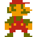
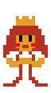
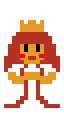

-
MARIO
000000 -
 x00
x00
-
WORLD
1-1 TIME
TOP


MARIO
000000
x00
WORLD
1-1
TIME
SCROLL DOWN


SUPER MARIO BROS
Oct. 18, 1985
Story (from the original instruction booklet)
One day the kingdom of the peaceful mushroom people was
invaded by the Koopa, a tribe of turtles famous for their
black magic. The quiet, peace-loving Mushroom People were
turned into mere stones, bricks and even field horsehair
plants, and the Mushroom Kingdom fell into ruin.
The only one
who can undo the magic spell on the Mushroom People and return
them to their normal selves is the Princess Toadstool, the
daughter of the Mushroom King. Unfortunately, she is presently
in the hands of Bowser, the King of the Koopa.
Mario hears
about the Mushroom People’s plight and sets out on a quest to
free the Mushroom Princess from the evil Koopa and restore the
fallen kingdom of the Mushroom People. You are Mario! It’s up
to you to save the Mushroom People from the black magic of the
Koopa!
SUPER MARIO BROS 2
Oct. 9, 1988
Story (from the original instruction booklet)
One evening, Mario had a strange dream. He dreamt of a long, long stairway leading up to a door. As soon as the door opened, he was confronted with a world he had never seen before spreading out as far as his eyes could see. When he strained his ears to listen, he heard a faint voice saying, "Welcome to Subcon, the land of dreams. We have been cursed by Wart and we are completely under his evil spell. We have been awaiting your arrival. Please defeat Wart and return Subcon to its natural state. The curse Wart has put on you in the real world will not have any effect upon you here. Remember, Wart hates vegetables. Please help us!"
At the same time this was heard, a bolt of lightning flashed before Mario’s eyes. Stunned, Mario lost his footing and tumbled upside down. He awoke with a start to find himself sitting up in his bed. To clear his head, Mario talked to Luigi, Toad and Princess Peach about the strange dream he had. They decided to go to a nearby mountain for a picnic.
After arriving at the picnic area and looking at the scenery, they see a small cave nearby. When they enter this cave, to their great surprise, there’s a stairway leading up, up and up. It is exactly like the one Mario saw in his dream. They all walk together up the stairs and at the top, find a door just like the one in Mario’s dream. When Mario and his friends, in fear, open the door, to their surprise, the world that he saw in his dream spreads out before them!

SUPER MARIO BROS 3
Feb. 12, 1990
Story (from the original instruction booklet)
The Mushroom Kingdom has been a peaceful place thanks to the brave deeds of Mario and Luigi. The Mushroom Kingdom forms an entrance to the Mushroom World where all is not well. Bowser has sent his 7 children to make mischief as they please in the normally peaceful Mushroom World.
They stole the royal magic wands from each country in the Mushroom World and used them to turn their kings into animals. Mario and Luigi must recover the royal magic wands from Bowser’s 7 kids to return the kings to their true forms. “Goodbye and good luck!” said the Princess and Toad as Mario and Luigi set off on their journey deep into the Mushroom World.

SUPER MARIO WORLD
Aug. 13, 1991
Story (from the original instruction booklet)
Having returned peace to Mushroom World, Mario and Luigi decide to take a leisurely vacation with Princess Peach. They set out for Yoshi’s Island in the magical island nation of Dinosaur Land far to the south.
But soon after arriving on the island, Princess Peach suddenly disappears. As Mario and Luigi desperately search for her, they discover a strange egg on the outskirts of the island. Then, before their very eyes, an odd little dragon hatches! The dragon calls himself Yoshi and says, "Monstrous turtles recently appeared here in this Dinosaur Land. They have used magic to seal my friends inside eggs. I tried to help them, but the turtles are incredibly strong and cast a spell on me, too… Will you please come with me to rescue my friends?"
What can this mean? Apparently, Bowser hasn’t learned his lesson, so it appears that his minions have yet again kidnapped Princess Peach.
Mario and Luigi begin another adventure in hopes of rescuing Yoshi’s pals and Princess Peach!

SUPER MARIO WORLD 2: YOSHI'S ISLAND
Dec. 12, 1995
Story (from the original instruction booklet)
This story happend a long long time ago …
This is a story about a baby and Yoshi …
A stork hurries across the dusky, pre-dawn sky, In his bill, he supports a pair of twins,
who are to be delivered to their parents as soon as possible.
Suddenly, something appears between the clouds and races towards the stork with blinding speed!
“SSCCRREEEEECH!!!”, it screams.
“These babies are mine!”
Snatching only one baby, the creature vanishes into the darkness from whence it came.
Oh no! The second baby falls undetected towards the open sea …
The kidnapper is Kamek, an evil Magikoopa from the Koopa Kingdom having divined last night that twin babies born this morning will bring disaster to the Koopa family.
He arranged for an early morning
ambush returning to his castle. Kamek realizes that he missed the other baby. He order his toadies.
“Go forth and find the other baby!! Don’t let his parents get him back! Ever!!”
Meanwhile, the second baby does not fall into the sea after all …
It lands safely on Yoshi’s back! And right after him drops a map!!
This paradise is Yoshi’s Island and on this island lives lots of different Yoshies.
These Yoshies are naturally laid back and relaxed but this is a calamity and everyone is in a state of panic.
As the Yoshies frantically yell over each other. the baby insistently points
at something.
Yes! The baby can sense the other baby’s location. All the Yoshies quickly agree to help carry the baby to its destination by using a relay system not unlike the old pony express.
The Green Yoshi draws first honors.
SUPER MARIO LAND
Aug. 11, 1989
Story (from the original instruction booklet)
Once upon a time, there was a peaceful world called Sarasaland. In this world there were 4 kingdoms named Birabuto, Muda, Easton and Chai.
One day, the skies of Sarasaland were suddenly covered by a huge black cloud. From a crack in this cloud, the unknown space monster Tatanga emerged to try to conquer Sarasaland.
Tatanga hypnotized the people of all the kingdoms so that he could control them in any way he liked. In this way he took over Sarasaland. Now, he wants to marry Princess Daisy of Sarasaland and make her his queen.
Mario came to know of these events, and he has started on a journey to the Chai Kingdom where Princess Daisy is held captive, in order to restore peace to Sarasaland.
Can Mario defeat Tatanga, release people from his interstellar hypnosis, and rescue Princess Daisy? It's all up to you and Mario's skill. Go for it Mario!

SUPER MARIO LAND 2: 6 GOLDEN COINS
Nov. 2, 1992
Story (from the original instruction booklet)
Danger! Danger!
While I was away crusading against the mystery alien Tatanga in Sarasa Land, an evil creep took over my castle and put the people of Mario Land under his control with a magic spell. This intruder goes by the name of Wario. He mimics my appearance, and has tried to steal my castle many times. It seems he has succeeded this time.
Wario has scattered the 6 Golden Coins from my castle all over Mario Land. These Golden Coins are guarded by those under Wario's spell. Without these coins, we can't get into the castle to deal with Wario. We must collect the 6 coins, attack Wario in the castle, and save everybody!
It’s time to set out on our mission!!


 
